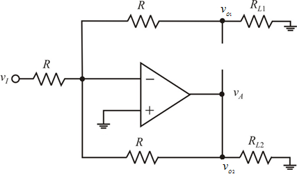
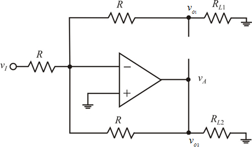
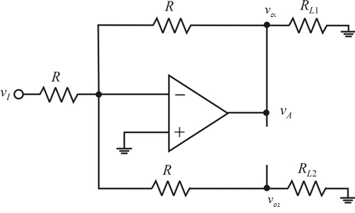
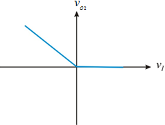

Refer to Figure P17.51 in the text book for op-amp circuit.
For , the op amp (inverting op amp) output  goes to the negative saturation level and the diode conducts (forward bias) and the diode
goes to the negative saturation level and the diode conducts (forward bias) and the diode  is cutoff.
is cutoff.
Draw the circuit.

Figure 1
Refer to Figure P17.51 in the text book for op-amp circuit.
For , the op amp (inverting op amp) output goes to the negative saturation level and the diode conducts (forward bias) and the diode is cutoff.
Draw the circuit.

Figure 1
The output voltages are,

For the op amp (inverting op amp) output goes to the positive saturation level. The diode is cutoff (reverse bias) and the diode  conducts.
conducts.
Draw the circuit.

Figure 2
The circuit acts as an inverting amplifier.
The output voltages are,
Draw the transfer characteristic, versus .
Figure 3
Draw the transfer characteristic,  versus
versus  .
.

Figure 4
Thus, the transfer characteristics are drawn.